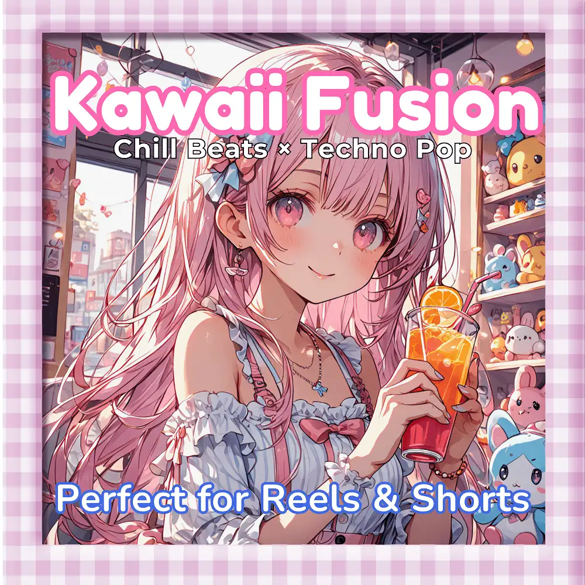

Techno Pop · Chill · Electronic
Kawaii Fusion: Chill Beats with Techno Pop Energy
Nanashino-chan
Explore Kawaii Fusion: Chill Beats with Techno Pop Energy by Nanashino-chan: 34 instrumental tracks spanning Techno Pop / Chill / Electronic. Start with Dreamy Intro / Soft Clouds, preview the collection and find your favorites on streaming services.
2025-05-14 · Released · 34 tracks · Instrumental
Preview the album
The jacket stays here until you choose a track. Playback uses YouTube.
YOUTUBE PREVIEW
Choose a track to listen
The jacket stays here until you choose a track. Playback uses YouTube.
If playback is unavailable, open the album or track on the streaming service.
Find this album on streaming services
Links marked “search” open search results. Select the album or track on the service.
Track list 34
- 01Dreamy Intro
- 02Soft Clouds
- 03Bubbly Beats
- 04Kawaii Vibes
- 05Playful Moments
- 06Sweet Escape
- 07Bright Skies
- 08Lively Sunshine
- 09Floating Melodies
- 10Cheerful Grooves
- 11Joyful Journey
- 12Gentle Waves
- 13Sugar Rush
- 14Happy Daydreams
- 15Blissful Beats
- 16Peaceful Playground
- 17Colorful Bounce
- 18Energetic Flow
- 19Whimsical Tunes
- 20Chill Breeze
- 21Radiant Beats
- 22Kawaii Melodies
- 23Serene Rhythms
- 24Soft Pastels
- 25Sweet Rhythm
- 26Bouncy Dreams
- 27Uplifting Notes
- 28Magical Moments
- 29Techno Glow
- 30Vibrant Sunset
- 31Kawaii Energy
- 32Calm Waves
- 33Peaceful Ending
- 34Dreamy Outro
Find a sound for your next post
Copy “Nanashino-chan + track title” and paste it into your social app’s music search. Availability depends on your region and account. Copying the name does not grant usage rights.